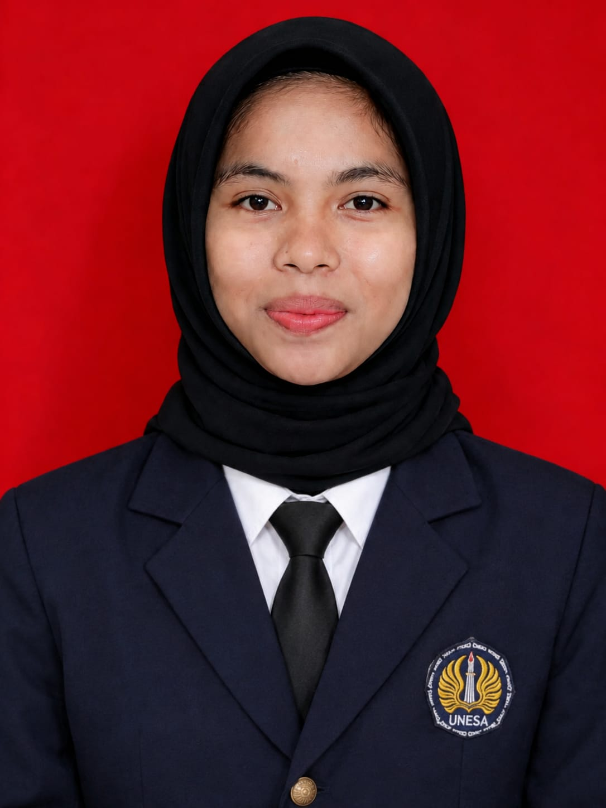
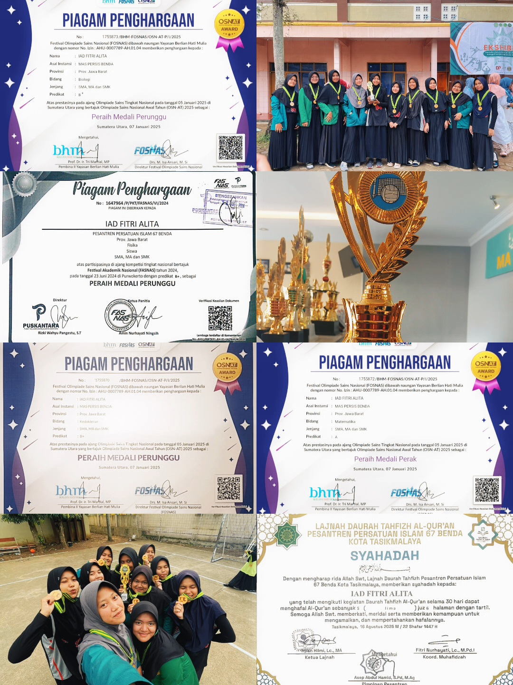
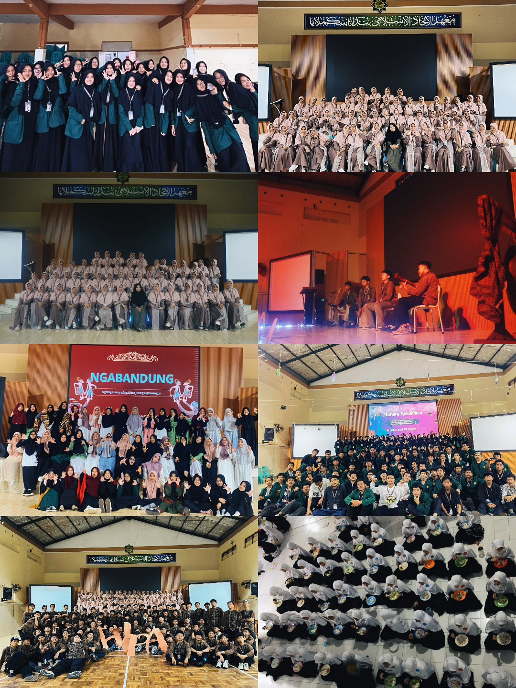
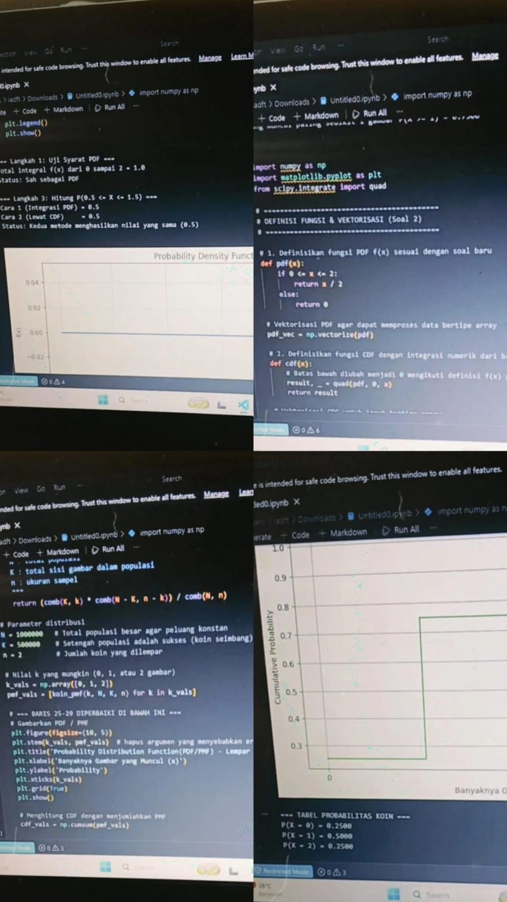

☕ LETS KNOW ABOUT ME

A showcase of my high school achievements, organizational experiences, and my early digital exploration as an Information Systems student.

Achieved outstanding academic performance during my studies at MAS PERSIS BENDA (2023–2025), demonstrating strong discipline, dedication to learning, and consistently maintained problem-solving skills.

Actively participated in high school organizations and event committees (2024), developing strong teamwork, communication, and leadership skills through various student activities.

I am a student in the Information Systems program under the Department of Informatics Engineering, specializing in software testing, web development, and digital systems.
The skills and expertise I am developing in the field of information technology.
Building responsive and interactive website interfaces using HTML, CSS, JavaScript, and other supporting frameworks.
Designing clean and user-friendly layouts, as well as analyzing system requirements to solve digital problems systematically.
My name is Iad Fitri Alita (NIM: 26051214217), a freshman majoring in Information System under the Departement of Informatics Engineering, Universitas Negeri Surabaya. I have a strong passion for business process analysis, system design, and data analytics.
I am open to discussions, project collaborations in data analysis, system design, or internship opportunities. .